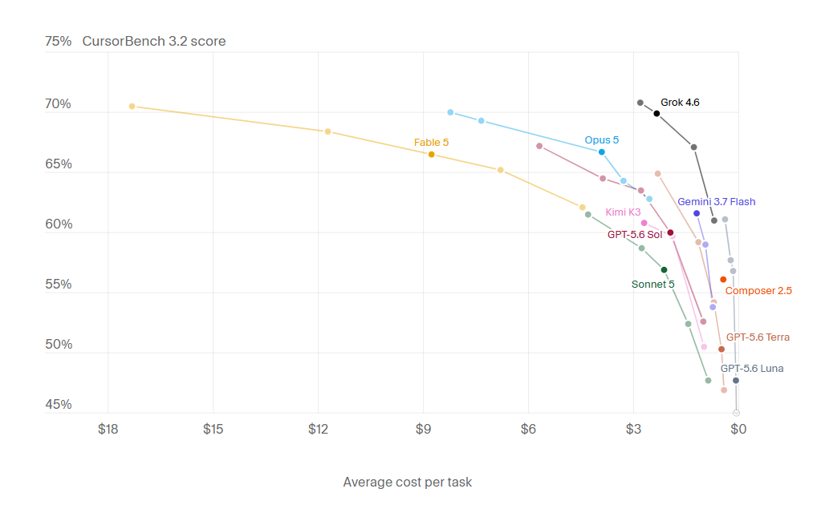

Cursor évalue les agents sur des tâches réelles, ambiguës et multi-fichiers, puis rapporte le score obtenu au coût moyen par tâche. Le graphique se lit d'un coup d'œil : la courbe de Fable 5 doit grimper jusqu'aux 18 dollars la tâche pour atteindre les 70 %, là où Grok 4.6 y arrive pour quelques dollars à peine. Opus 5 tient une position intermédiaire confortable, et tout le peloton se tasse dans la partie droite, sous les 3 dollars, à quelques points seulement du sommet. Le vrai critère, quand on paie la note tous les mois, se lit à l'horizontale.
